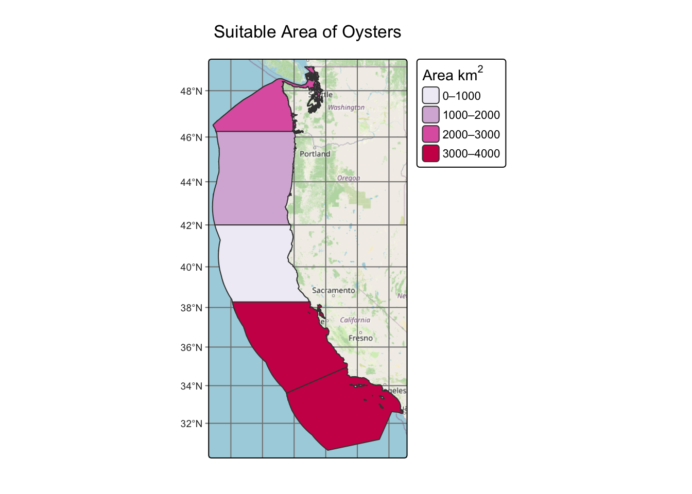
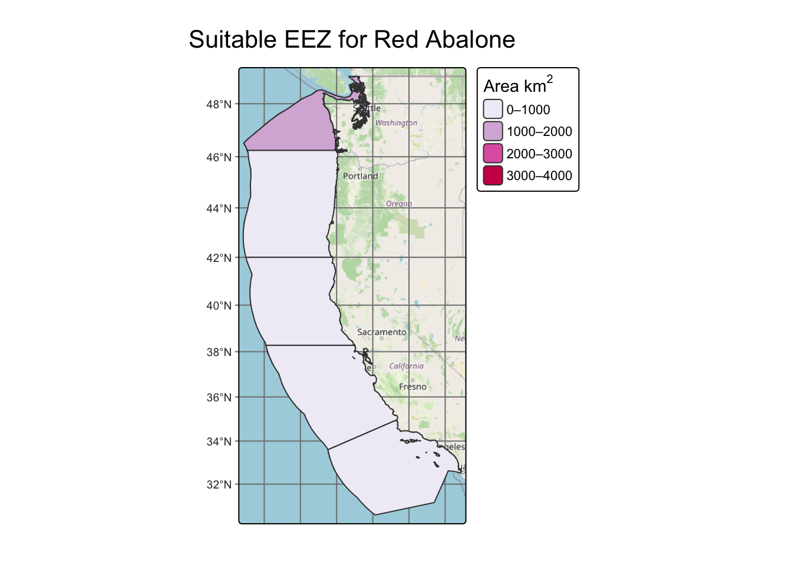

Code
library(tidyverse)
library(terra)
library(sf)
library(tmap)
library(paletteer)
library(maptiles)
library(testthat)
library(kableExtra)
library(knitr)December 11, 2025
Seafood production in the United States is currently dominated by wild fisheries harvests. Marine aquaculture makes up a small portion of seafood production, however this method of production has been expanding over the past few decades with an approximately 70% increase in marine hectares farmed (Lester et al., 2024). By expanding marine aquaculture, this adds diversity to methods, geographic diversity, and species to seafood production. Diversity within our food systems is vital as it makes it more resilient to disturbances, such as climate change or supply chain failures.
A first step to understanding where marine aquaculture can continue to expand and be implemented in the United States, is identifying where marine aquaculture farms can be located. Each coastal nation has an Exclusive Economic Zone (EEZ), which is an area of the ocean, generally extending 200 nautical miles (230 miles) beyond a nation’s territorial sea, within which a coastal nation has jurisdiction over both living and nonliving resources (NOAA, 2023). Meaning the country has special rights to explore, exploit, and manage marine resources. Therefore, suitable areas for marine aquaculture in the United States can be identified within these Exclusive Economic Zones.
By identifying spatial and environmental requirements for aquaculture farms and marine species, we can map the suitable areas where various species can be raised, within in the EEZs.
How can sea surface temperature and ocean depth rasters be used to determine what areas may be suitable to raise different marine aquaculture species?
NOTE: When conducting a spatial analyses, we often want to ensure that our spatial objects have the same coordinate reference systems, resolutions, extents, etc. If statements and unit checks can be written within our code to check these conditions. These “gut checks” were written within the code folds.
For this analysis, we’ll be using Sea Surface Temperature rasters from 2008-2012. These rasters were obtained from the NOAA’s 5km Daily Global Satellite Sea Surface Temperature Anomaly v3.1. We’ll first stack the rasters into a single-multilayer raster. We will then calculate the mean sea surface temperature value for each cell across the five years. Therefore, each cell within avg_sst_rast represents the average sea surface temperature from 2008 to 2012 at that location. We’ll also convert the temperature units from Kelvin to Celsius by subtracting 273.15, using raster algebra
# Load in Sea Surface Temperature rasters.
sst_08 <- rast(here::here('posts', 'eds223-blog-post', 'data', 'average_annual_sst_2008.tif'))
sst_09 <- rast(here::here('posts', 'eds223-blog-post', 'data', 'average_annual_sst_2009.tif'))
sst_10 <- rast(here::here('posts', 'eds223-blog-post', 'data', 'average_annual_sst_2010.tif'))
sst_11 <- rast(here::here('posts', 'eds223-blog-post', 'data', 'average_annual_sst_2011.tif'))
sst_12 <- rast(here::here('posts', 'eds223-blog-post', 'data', 'average_annual_sst_2012.tif'))Depth is another parameter we need for our analysis. This data was obtained from the General Bathymetric Chart of the Oceans (GEBCO). First, we’ll crop the raster to match the extent of the avg_sst_rast, to ensure that both rasters are within the same study area. We also want to make sure that the resolution of the rasters are the same. So we will resample the cropped depth raster to match the resolution of the avg_sst_rast, using the nearest neighbor method. This method assigns each output cell the value of the closest input cell, therefore the depth value in the depth_resample raster is simply the value from the nearest pixel in the original depth raster.
Warning: Updating CRS of 'avg_sst_rast' and 'depth' to match.# Check that the depth_resample and avg_sst_rast match in resolution, extent, and crs.
if(crs(avg_sst_rast) == crs(depth_resample)) {
print("CRS of 'avg_sst_rast' and 'depth_resample' match.")
} else{
warning("Updating CRS of 'avg_sst_rast' and 'depth_resample' to match.")
# Transform data to match
avg_sst_rast <- project(avg_sst_rast, depth_resample)
}[1] "CRS of 'avg_sst_rast' and 'depth_resample' match."[1] "Resolutions of 'avg_sst_rast' and 'depth_resample' match."[1] "Extents of 'avg_sst_rast' and 'depth_resample' match."For our analysis, we will be determining suitable areas for oysters. The optimal growing conditions for oysters are sea surface temperatures 11-30°C, and depth of 0-70 meters below sea level.
We’ll now reclassify our rasters, given certain temperature and depth parameters, using a reclassification matrix. This is the step within our analysis that identifies the suitable areas for the marine species. Within the temperature matrix we are setting cells that have a sea surface temperature of 11-30 degrees Celsius as 1, and any other values as 0. Within the depth matrix we are setting cells that have a depth of -70-0 meters to 1, and any other values as 0. By reclassifying our rasters, we can then multiple the reclassified rasters to create a new raster, suitable_eez, which only selects the areas where 1x1=1.
The reclassification step resulted in a raster that identifies suitable areas with 0’s and 1’s, across a large portion of the West Coast and Pacific Ocean. However, since the United States only has rights to manage marine resources within it’s designated Exclusive Economic Zones, we want to create a mask that limits the raster to the West Coast EEZ boundaries. We can then calculate the area, in square kilometers, that is suitable to raise oysters.
# Check if the coordinate systems match.
if(crs(suitable_eez) == crs(west_coast)) {
print("CRS of 'suitable_eez' and 'west_coast' match.")
} else{
warning("Updating CRS of 'suitable_eez' and 'west_coast' to match.")
# transform data to match
west_coast <- st_transform(west_coast, crs = st_crs(suitable_eez))
}Warning: Updating CRS of 'suitable_eez' and 'west_coast' to match.# Vectoirize west_coast boundary.
west_coast_vect <- vect(west_coast)
# Select the number suitable cells within west coast EEZs.
region_count <- terra::extract(suitable_eez_mask, west_coast_vect,
fun = "sum") %>%
rename(suitable_cell_count = depth)
# Use cellSize to change the units to kilometers.
grid_cell_km <- cellSize(suitable_eez_mask, unit = "km")
# Convert cells of mask raster into km^2.
suitable_area_rast <- suitable_eez_mask * grid_cell_km
# Calculate the area of suitable cells within west coast EEZ.
region_area <- terra::extract(suitable_area_rast, west_coast_vect,
fun = sum, na.rm = TRUE) %>%
rename(suitable_area_oysters = depth)
# Creating bins for suitable area.
region_area$suitable_area_bin_oysters <- cut(
region_area$suitable_area_oysters,
breaks = c(0, 1000, 2000, 3000, 4000),
include.lowest = TRUE,
right = FALSE,
labels = c("0–1000", "1000–2000", "2000–3000", "3000–4000"))
# Joining the suitable region area to the west_coast boundary dataframe.
west_coast <- west_coast %>%
left_join(region_area, by = c("rgn_id" = "ID")) # Creating a table of suitable area in each region.
suitable_df <- west_coast %>%
select("rgn", "suitable_area_oysters") %>%
st_drop_geometry() %>%
kbl(escape = FALSE,
col.names = c("Region", "Suitable Area (km²)"),
caption = "Table 1: Suitable Area (km²) for Oysters") %>%
kable_styling(bootstrap_options = "striped")
suitable_df| Region | Suitable Area (km²) |
|---|---|
| Oregon | 1028.9013 |
| Northern California | 194.1284 |
| Central California | 3656.8195 |
| Southern California | 3062.2031 |
| Washington | 2435.9250 |
This table identifies the exact area that is determined to be suitable for Oysters. Looking at our map it may appear that the Central and Southern California regions both have the same amount of area suitable for Oysters, but this table tells us that the prime zone would be the Central California.
# Create a map of the suitable area within each Exclusive Economic Zone.
tm_graticules() +
tm_basemap("OpenStreetMap") +
tm_shape(west_coast) +
tm_polygons(fill = "suitable_area_bin_oysters",
fill.scale = tm_scale(values = "brewer.pu_rd"),
fill.legend = tm_legend(expression("Area km"^{2}))) +
tm_title(text = "Suitable Area of Oysters")
This map compares the suitability of each region. Highlighting which regions have the highest area in km\(^2\) that can support a given species, in this case we are looking at oysters.
To identify other suitable regions for other marine species, a function was created, where only parameters required are the depth and temperature ranges, and the species name we are interested in. This function will create a map of new species we are interested in. The map identifies the regions along the west coast that contains the largest suitable areas for the marine species.
# Create a function to find suitable area for any species.
suitable_eez_fun <- function(min_temp, max_temp, min_depth, max_depth, species_name) {
# Reclassify avg_sst_rast into locations that are suitable for selected species.
rcl_temp <- matrix(c(-Inf, min_temp, 0,
min_temp, max_temp, 1,
max_temp, Inf, 0),
ncol = 3, byrow = TRUE)
reclassified_sst <- classify(avg_sst_rast, rcl = rcl_temp)
reclassified_sst[is.na(reclassified_sst)] <- 0
# Reclassify depth raster into locations that are suitable for selected species.
rcl_depth <- matrix(c(-Inf, -(min_depth), 0,
-(min_depth), max_depth, 1,
max_depth, Inf, 0),
ncol = 3, byrow = TRUE)
reclassified_depth <- classify(depth_resample, rcl = rcl_depth)
reclassified_depth[is.na(reclassified_depth)] <- 0
# Multiply depth and temperature rasters to find suitable areas for both conditions.
suitable_eez <- (reclassified_depth)*(reclassified_sst)
# Masking the suitable_eez raster to the west_coast regions.
suitable_eez_mask <- mask(suitable_eez, west_coast)
# Select the number suitable cells within west coast EEZs.
region_count <- terra::extract(suitable_eez_mask, west_coast_vect, fun = "sum")
# Use cellSize to change the units to kilometers.
grid_cell_km <- cellSize(suitable_eez_mask, unit = "km")
# Convert cells of mask raster into km^2.
suitable_area_rast <- suitable_eez_mask * grid_cell_km
# Calculate the area of suitable cells within west coast EEZ.
region_area_species <- terra::extract(suitable_area_rast, west_coast_vect,
fun = sum, na.rm = TRUE) %>%
rename(suitable_area_select_species = depth)
# Creating bins for suitable area.
region_area_species$suitable_area_bin_select_species <- cut(
region_area_species$suitable_area_select_species,
breaks = c(0, 1000, 2000, 3000, 4000),
include.lowest = TRUE,
right = FALSE,
labels = c("0–1000", "1000–2000", "2000–3000", "3000–4000"))
# Joining the suitable region area to the west_coast boundary dataframe.
west_coast_species <- west_coast %>%
left_join(region_area_species, by = c("rgn_id" = "ID"))
# Create a map of the suitable area within each Exclusive Economic Zone.
species_map <- tm_graticules() +
tm_basemap("OpenStreetMap") +
tm_shape(west_coast_species) +
tm_polygons(fill = "suitable_area_bin_select_species",
fill.scale = tm_scale(values = "brewer.pu_rd"),
fill.legend = tm_legend(expression("Area km"^{2}))) +
tm_title(text = paste("Suitable EEZ for", str_to_title(species_name))) +
tmap_options(component.autoscale = FALSE)
# Creating a table of suitable area in each region.
suitable_df_select_species <- west_coast_species %>%
select("rgn", "suitable_area_select_species") %>%
st_drop_geometry() %>%
kable(escape = FALSE,
col.names = c("Region", "Suitable Area (km²)"),
caption = paste("Table 1: Suitable Area (km²) for", str_to_title(species_name))) %>%
kable_styling(bootstrap_options = "striped")
print(species_map)
suitable_df_select_species
}
# Use the function to create a map for Red Abalone.
suitable_eez_fun(min_temp = 8,
max_temp = 18,
min_depth = 24,
max_depth = 0,
species_name = "Red Abalone")
| Region | Suitable Area (km²) |
|---|---|
| Oregon | 504.4047 |
| Northern California | 308.5819 |
| Central California | 732.7807 |
| Southern California | 713.2249 |
| Washington | 1687.8526 |
Using the function, a map comparing the suitable regions for Red Abalone was created and a table that identifies the exact amount of square kilometers that can support Red Abalone in each Exclusive Economic Zone. According to our map, the Washington region appears to have the largest suitable area for Red Abalone to be raised, in comparison to the other EEZ regions. From looking at the exact suitable area (km\(^2\)) within each EEZ region, the areas are fairly low, being within the 0-1000 square kilometers. This suggests that marine aquaculture farms raising Red Abalone would be restricted to the limited suitable areas. Therefore, it may be more economically feasible and efficient to consider raising other species that have a broader and larger suitable area, within each EEZ along the West Coast.
This analysis provides a foundation of understanding where future marine aquaculture expansion within each West Coast Exclusive Economic Zone for specific species is the most feasible. By identifying the suitable growing areas for marine species, we can determine what species may or may not efficiently contribute to seafood production. Determining the most suitable areas for marine aquaculture provides us with data-based evidence that guides make decision-making that promotes the diversification of marine aquaculture seafood production and supports sustainability within our food systems. For a more comprehensive analysis, other variable such as dissolved oxygen, salinity, marine protected areas, etc. could be incorporated to provide more refined suitable areas.
Flanders Marine Institute (2025): MarineRegions.org. Available online at www.marineregions.org. Consulted on 2025-11-28.
Gridded Bathymetry Data (2025). [depth.tif] General Bathymetric Chart of the Oceans. https://www.gebco.net/data-products/gridded-bathymetry-data#toc-terms-of-use
Lester, S. E., Gentry, R. R., & Froehlich, H. E. (2024). The role of marine aquaculture in contributing to the diversity and stability of U.S. seafood production. Marine Policy, 160, 105994. https://doi.org/10.1016/j.marpol.2023.105994
NOAA Coral Reef Watch. 2018, updated daily. NOAA Coral Reef Watch Version 3.1 Daily Global 5km Satellite Coral Bleaching Degree Heating Week Product, Jun. 3, 2013-Jun. 2, 2014. College Park, Maryland, USA: NOAA Coral Reef Watch. Data set accessed 2020-09-01 at ftp://ftp.star.nesdis.noaa.gov/pub/sod/mecb/crw/data/5km/v3.1/nc/v1.0/daily/dhw/.
Palomares, M.L.D. and D. Pauly. Editors. 2025. SeaLifeBase. World Wide Web electronic publication. www.sealifebase.org, version (04/2025).
What is the “EEZ”? - NOAA Ocean Exploration. (2023a, January 6). NOAA Ocean Exploration. https://oceanexplorer.noaa.gov/ocean-fact/useez/
@online{miura2025,
author = {Miura, Jaslyn},
title = {Determining {Exclusive} {Economic} {Zones} for {Marine}
{Aquaculture} {Species}},
date = {2025-12-11},
url = {https://jaslynmiura.github.io/posts/eds223-blog-post/},
langid = {en}
}